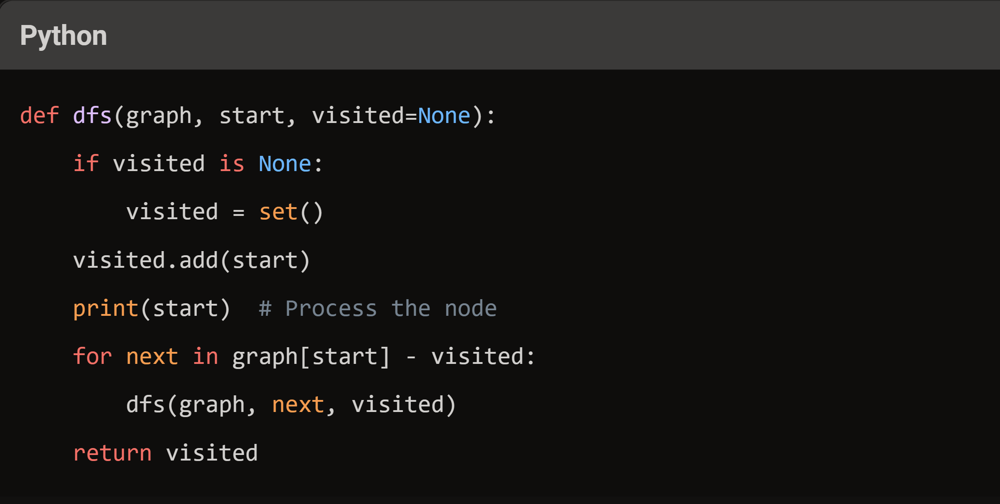

Algorithm: Depth first Search
July 21, 2024
Algorithm
Computer Science
Discover the Depth First Search algorithm, a key tool for graph traversal. Learn its principles,
implementation, and real-world applications, from pathfinding to puzzle-solving.
Introduction
In the world of computer science, graph traversal algorithms are essential tools for solving complex problems. One such fundamental algorithm is Depth First Search (DFS). Whether you’re a seasoned programmer or just starting out, understanding DFS can significantly enhance your problem-solving toolkit. In this blog, we’ll dive deep into the intricacies of DFS, exploring its principles, implementation, and real-world applications.What is Depth First Search?
Depth First Search is a graph traversal algorithm that explores as far as possible along each branch before backtracking. Imagine you’re navigating a maze: you keep moving forward until you hit a dead end, then you backtrack to the last decision point and try a different path. This is essentially how DFS works.How Does DFS Work?
DFS can be implemented using either a stack (iterative approach) or recursion. Here’s a step-by-step breakdown of the algorithm:- 1. Start at the initial vertex and mark it as visited.
- 2. Explore an adjacent unvisited vertex and mark it as visited.
- 3. If there are no unvisited adjacent vertices, backtrack to the previous vertex.
- 4. Repeat steps 2 and 3 until all vertices are visited.

Looking for AI solutions for your business? Check out our latest products and services to accelerate your digital transformation journey.
DFS Pseudocode
Here’s a simple pseudocode for DFS:

Applications of DFS
DFS is not just a theoretical concept; it has numerous practical applications, including:- Pathfinding: Finding a path between two nodes in a maze or a network.
- Topological Sorting: Ordering tasks in a sequence based on dependencies.
- Cycle Detection: Identifying cycles in a graph.
- Solving Puzzles: Such as Sudoku, where you need to explore all possible configurations.
Advantages and Disadvantages
Advantages:- Simple and easy to implement.
- Memory-efficient for large graphs.
- Can be used to solve a wide range of problems.
- Not optimal for finding the shortest path.
- May get stuck in infinite loops if not properly implemented.
- Complexity can be high for certain types of graphs.
Conclusion
Depth First Search is a powerful algorithm with a wide range of applications. By understanding its principles and implementation, you can tackle various complex problems more effectively. Whether you’re solving puzzles, navigating mazes, or analyzing networks, DFS is a valuable tool in your algorithmic arsenal.Get the latest updates
Sign up for our newsletter
By signing up to our newsletter you agree to our
Terms of Service
and
Privacy policy